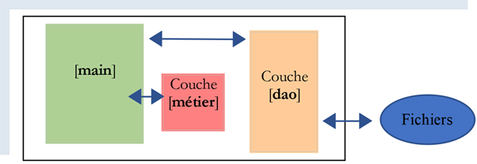
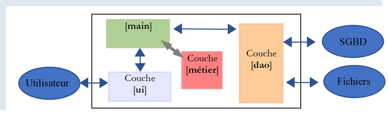
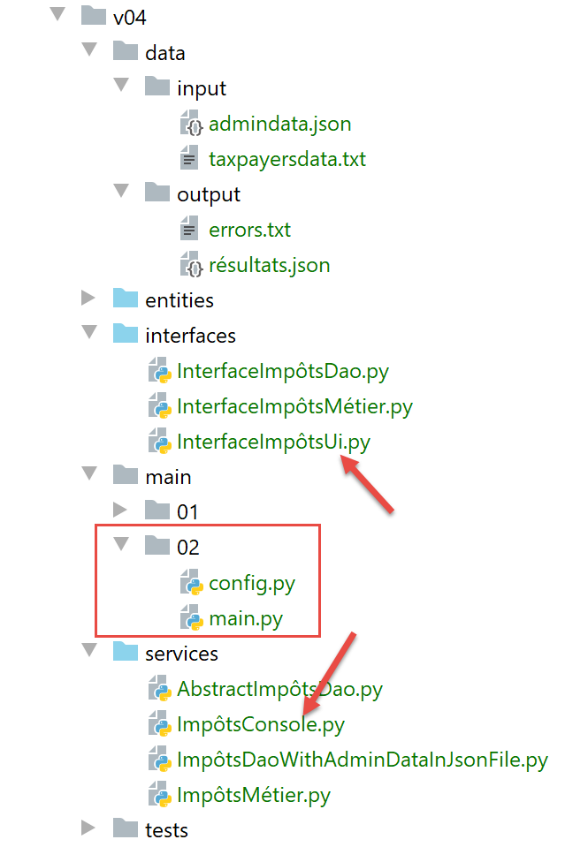

15. Esercizio pratico - versione 4

Riprendiamo qui l’esercizio descritto nel paragrafo |Versione 3| e lo affrontiamo ora utilizzando classi e interfacce. Scriveremo due applicazioni:
L’applicazione 1 sarà la seguente:

Uno script principale [main] istanzierà un livello [dao] e un livello [métier]:
- il livello [dao] avrà il compito di gestire i dati memorizzati in file di testo e, successivamente, in un database;
- il livello [métier] avrà il compito di calcolare l’imposta;
In questa applicazione non sono previste azioni da parte dell’utente: i dati dei contribuenti saranno ricavati da un file di testo il cui nome verrà fornito al modulo [main].
Nell’applicazione 2, sarà l’utente a digitare i dati dei contribuenti. L’architettura si evolverà quindi nel modo seguente:

- il livello [dao] (Data Access Object) si occupa dell’accesso ai dati esterni
- il livello [métier] si occupa degli aspetti di business, in questo caso il calcolo dell’imposta. Non si occupa dei dati. Questi ultimi possono provenire da due fonti:
- il livello [dao] per i dati persistenti;
- il livello [ui] per i dati forniti dall'utente.
- il livello [ui] (User Interface) si occupa delle interazioni con l'utente;
- [main] funge da coordinatore;
Di seguito, gli strati [dao], [métier] e [ui] saranno implementati ciascuno tramite una classe. I livelli [métier] e [dao] saranno gli stessi per entrambe le applicazioni. Per questo motivo sono stati raggruppati in un’unica versione dell’esercizio applicativo.
15.1. Versione 4 – applicazione 1
La versione 4 calcola l’imposta di un elenco di contribuenti contenuto in un file di testo. Presenta la seguente struttura:

15.1.1. Le entità

Le entità sono classi di dati. Il loro ruolo è quello di incapsulare i dati e di fornire metodi getter/setter che consentono di verificarne la validità. Le entità vengono scambiate tra i livelli. Una stessa entità può passare dal livello [ui] al livello [dao] e viceversa.
15.1.1.1. La classe [ImpôtsError]
Utilizzeremo una classe di eccezione proprietaria:
# -------------------------------
# classe di eccezione
from MyException import MyException
class ImpôtsError(MyException):
pass
Non appena i livelli [métier] e [dao] riscontreranno un problema, genereranno questa eccezione. Essa deriva dalla classe [MyException]. Si utilizza quindi nel modo seguente: [raise ImpôtsError(code_erreur, msg_erreur)].
15.1.1.2. La classe [AdminData]
La classe [AdminData] incapsula le costanti coinvolte nel calcolo dell’imposta:
from BaseEntity import BaseEntity
# dati dell'amministrazione fiscale
class AdminData(BaseEntity):
# chiavi escluse dallo stato della classe
excluded_keys = []
# chiavi autorizzate
@staticmethod
def get_allowed_keys() -> list:
return [
"limites",
"coeffr",
"coeffn",
"plafond_qf_demi_part",
"plafond_revenus_celibataire_pour_reduction",
"plafond_revenus_couple_pour_reduction",
"valeur_reduc_demi_part",
"plafond_decote_celibataire",
"plafond_decote_couple",
"plafond_impot_couple_pour_decote",
"plafond_impot_celibataire_pour_decote",
"abattement_dixpourcent_max",
"abattement_dixpourcent_min"
]
- riga 5: la classe [AdminData] estende la classe [BaseEntity] descritta nel paragrafo |BaseEntity|. Si ricorda che le classi che estendono la classe [BaseEntity] devono definire:
- un attributo di classe [excluded_keys] (riga 7) che elenca le proprietà dell’oggetto escluse quando l’oggetto viene trasformato in un dizionario;
- un metodo statico [get_allowed_keys] (righe 10-26) che restituisce l’elenco delle proprietà accettate quando l’oggetto viene inizializzato con un dizionario;
Non sono stati utilizzati setter per verificare la validità dei dati utilizzati per inizializzare un oggetto [AdminData]. Infatti, tale oggetto è unico e definito dalla configurazione e quindi non è soggetto a errori.
15.1.1.3. La classe [TaxPayer]
La classe [TaxPayer] modellerà un contribuente:
# importazioni
from BaseEntity import BaseEntity
from ImpôtsError import ImpôtsError
# un contribuente
class TaxPayer(BaseEntity):
# modella un contribuente
# ID: identificativo
# coniugato: sì / no
# figli: il numero dei suoi figli
# stipendio: il suo stipendio annuale
# imposta: importo dell'imposta da pagare
# maggiorazione: maggiorazione dell’imposta da pagare
# sconto: lo sconto sull’imposta da pagare
# riduzione: riduzione dell'imposta da pagare
# aliquota: aliquota fiscale del contribuente
# chiavi escluse dalla dichiarazione di classe
excluded_keys = []
# chiavi consentite
@staticmethod
def get_allowed_keys() -> list:
return ['id', 'marié', 'enfants', 'salaire', 'impôt', 'surcôte', 'décôte', 'réduction', 'taux']
# proprietà
@property
def marié(self) -> str:
return self.__marié
@property
def enfants(self) -> int:
return self.__enfants
@property
def salaire(self) -> int:
return self.__salaire
@property
def impôt(self) -> int:
return self.__impôt
@property
def surcôte(self) -> int:
return self.__surcôte
@property
def décôte(self) -> int:
return self.__décôte
@property
def réduction(self) -> int:
return self.__réduction
@property
def taux(self) -> float:
return self.__taux
# setter
@marié.setter
def marié(self, marié: str):
ok = isinstance(marié, str)
if ok:
marié = marié.strip().lower()
ok = marié == "oui" or marié == "non"
if ok:
self.__marié = marié
else:
raise ImpôtsError(31, f"l'attribut marié [{marié}] doit avoir l'une des valeurs oui / non")
@enfants.setter
def enfants(self, enfants):
# figli deve essere un numero intero >=0
try:
enfants = int(enfants)
erreur = enfants < 0
except:
erreur = True
if not erreur:
self.__enfants = enfants
else:
raise ImpôtsError(32, f"L'attribut enfants [{enfants}] doit être un entier >=0")
@salaire.setter
def salaire(self, salaire):
# stipendio deve essere un numero intero >=0
try:
salaire = int(salaire)
erreur = salaire < 0
except:
erreur = True
if not erreur:
self.__salaire = salaire
else:
raise ImpôtsError(33, f"L'attribut salaire [{salaire}] doit être un entier >=0")
@impôt.setter
def impôt(self, impôt):
# imposta deve essere un numero intero >=0
try:
impôt = int(impôt)
erreur = impôt < 0
except:
erreur = True
if not erreur:
self.__impôt = impôt
else:
raise ImpôtsError(34, f"L'attribut impôt [{impôt}] doit être un nombre >=0")
@décôte.setter
def décôte(self, décôte):
# lo sconto deve essere un numero intero >=0
try:
décôte = int(décôte)
erreur = décôte < 0
except:
erreur = True
if not erreur:
self.__décôte = décôte
else:
raise ImpôtsError(35, f"L'attribut décôte [{décôte}] doit être un nombre >=0")
@surcôte.setter
def surcôte(self, surcôte):
# il sovrapprezzo deve essere un numero intero >=0
try:
surcôte = int(surcôte)
erreur = surcôte < 0
except:
erreur = True
if not erreur:
self.__surcôte = surcôte
else:
raise ImpôtsError(36, f"L'attribut surcôte [{surcôte}] doit être un nombre >=0")
@réduction.setter
def réduction(self, réduction):
# la maggiorazione deve essere un numero intero >=0
try:
réduction = int(réduction)
erreur = réduction < 0
except:
erreur = True
if not erreur:
self.__réduction = réduction
else:
raise ImpôtsError(37, f"L'attribut réduction [{réduction}] doit être un nombre >=0")
@taux.setter
def taux(self, taux):
# il tasso deve essere un numero reale >=0
try:
taux = float(taux)
erreur = taux < 0
except:
erreur = True
if not erreur:
self.__taux = taux
else:
raise ImpôtsError(38, f"L'attribut taux [{taux}] doit être un nombre >=0")
Note:
- la classe [TaxPayer] incapsula un contribuente;
- riga 7: la classe [TaxPayer] deriva dalla classe [BaseEntity]. Ha quindi un identificativo [id];
- riga 20: nessuna proprietà è esclusa dallo stato di un oggetto [AdminData];
- righe 22-25: le proprietà della classe. Queste sono descritte in dettaglio alle righe 9-17;
- righe 27-58: getter degli attributi della classe;
- righe 60-161: i setter degli attributi della classe. Si ricorda che il vantaggio di una classe che incapsula dati rispetto a un semplice dizionario è che la classe può verificare la validità delle proprie proprietà grazie ai propri setter;
15.1.2. Il livello [dao]
Raccoglieremo le implementazioni dei livelli in una cartella denominata [services]. Queste classi implementeranno le interfacce definite nella cartella [interfaces].

15.1.2.1. L'interfaccia [InterfaceImpôtsDao]
Il livello [dao] implementerà la seguente interfaccia [InterfaceImpôtsDao] (file InterfaceImpôtsDao.py):
# importazioni
from abc import ABC, abstractmethod
# interfaccia IImpôtsDao
from AdminData import AdminData
class InterfaceImpôtsDao(ABC):
# elenco delle fasce d'imposta
@abstractmethod
def get_admindata(self) -> AdminData:
pass
# elenco dei dati dei contribuenti
@abstractmethod
def get_taxpayers_data(self) -> dict:
pass
# registrazione dei risultati del calcolo dell’imposta
@abstractmethod
def write_taxpayers_results(self, taxpayers_results: list):
pass
L'interfaccia definisce tre metodi:
- [get_admindata]: è il metodo che recupera l'array delle fasce di imposta. Si noti che non vengono fornite indicazioni su come ottenere questi dati. Di seguito, essi saranno recuperati prima da un file di testo e poi da un database. Spetterà alle classi che implementano l'interfaccia adattarsi alla modalità di archiviazione dei dati. Avremo quindi una classe per recuperare le fasce di imposta da un file di testo e un’altra per recuperarle da un database. Entrambe implementeranno il metodo [get_admindata];
- [get_taxpayers_data]: è il metodo che recupera i dati dei contribuenti. Anche in questo caso non specifichiamo dove si trovino. Tratteremo solo il caso in cui siano contenuti in un file di testo;
- [write_taxpayers_results]: è il metodo che salverà i risultati del calcolo dell’imposta. Non specifichiamo dove. Tratteremo solo il caso in cui i risultati siano salvati in un file di testo. Il parametro [taxpayers_results] sarà l’elenco dei risultati da salvare;
15.1.2.2. La classe [AbstractImpôtsDao]
Il livello [dao] sarà implementato da due classi:
- una recupererà i dati (contribuenti, risultati, scaglioni fiscali) dai file di testo;
- l’altra recupererà i dati (contribuenti, risultati) da file di testo e le fasce d’imposta da un database;
Le due classi differiranno solo per la gestione delle fasce d'imposta. I dati relativi ai contribuenti e i risultati dei calcoli dell'imposta saranno invece gestiti allo stesso modo. Per questo motivo, li gestiremo in una classe padre [AbstractImpôtsDao]. La gestione specifica delle fasce d'imposta sarà invece gestita in due classi figlie:
- la classe [ImpôtsDaoWithAdminDataInJsonFile] recupererà le fasce d’imposta da un file di testo nel formato jSON;
- la classe [ImpôtsDaoWithAdminDataInDatabase] recupererà le fasce d’imposta da un database;
La classe padre [AbstractImpôtsDao] sarà la seguente:
# importazioni
import codecs
import json
from abc import abstractmethod
from AdminData import AdminData
from ImpôtsError import ImpôtsError
from InterfaceImpôtsDao import InterfaceImpôtsDao
from TaxPayer import TaxPayer
# classe di base per il livello [dao]
class AbstractImpôtsDao(InterfaceImpôtsDao):
# i contribuenti e le relative imposte saranno contenuti in file di testo
# costruttore
def __init__(self, config: dict):
# config[taxpayersFilename]: il nome del file di testo dei contribuenti
# config[resultsFilename]: il nome del file jSON dei risultati
# config[errorsFilename]: il nome del file degli errori
#: i parametri vengono memorizzati
self.taxpayers_filename = config.get("taxpayersFilename")
self.taxpayers_results_filename = config.get("resultsFilename")
self.errors_filename = config.get("errorsFilename")
# ------------------
# interfaccia IImpôtsDao
# ------------------
# elenco dei dati dei contribuenti
def get_taxpayers_data(self) -> dict:
…
# registrazione dell’imposta dei contribuenti
def write_taxpayers_results(self, taxpayers: list):
…
# lettura delle fasce d'imposta
@abstractmethod
def get_admindata(self) -> AdminData:
pass
-
riga 13: la classe [AbstractImpôtsDao] implementa l'interfaccia [InterfaceImpôtsDao]. Si trovano quindi i tre metodi di questa interfaccia:
- [get_taxpayers_data]: riga 31;
- [write_taxpayers_results]: riga 35;
- [get_admindata]: riga 40. Questo metodo non verrà implementato dalla classe [AbstractImpôtsDao], pertanto è dichiarato astratto (riga 39);
-
riga 16: il costruttore riceve un dizionario [config] contenente le seguenti informazioni:
- [taxpayersFilename]: il nome del file di testo che contiene i dati dei contribuenti;
- [resultsFilename]: il nome del file di testo in cui verranno inseriti i risultati;
- [errorsFilename]: il nome del file di testo che elenca gli errori riscontrati durante l’elaborazione del file [taxpayersFilename];
Il metodo [get_taxpayers_data] è il seguente:
# elenco dei dati dei contribuenti
def get_taxpayers_data(self) -> dict:
# inizializzazioni
taxpayers_data = []
datafile = None
erreurs = []
try:
# apertura del file dei dati
datafile = open(self.taxpayers_filename, "r")
# elaborazione della riga corrente del file
ligne = datafile.readline()
# numero di riga
numligne = 0
while ligne != '':
# una riga di +
numligne += 1
# rimozione degli spazi
ligne = ligne.strip()
# si ignorano le righe vuote e i commenti
if ligne != "" and ligne[0] != "#":
try:
# si recuperano i 4 campi id, coniuge, figli, stipendio che costituiscono la riga del contribuente
(id, marié, enfants, salaire) = ligne.split(",")
# si crea un nuovo TaxPayer
taxpayers_data.append(
TaxPayer().fromdict({'id': id, 'marié': marié, 'enfants': enfants, 'salaire': salaire}))
except BaseException as erreur:
# si rileva l'errore
erreurs.append(f"Ligne {numligne}, {erreur}")
# si legge una nuova riga del contribuente
ligne = datafile.readline()
# si registrano gli errori, se presenti
if erreurs:
text = f"Analyse du fichier {self.taxpayers_filename}\n\n" + "\n".join(erreurs)
with codecs.open(self.errors_filename, "w", "utf-8") as fd:
fd.write(text)
# si restituisce il risultato
return {"taxpayers": taxpayers_data, "erreurs": erreurs}
except BaseException as erreur:
# viene generata un'eccezione ImpôtsError
raise ImpôtsError(11, f"{erreur}")
finally:
# si chiude il file
if datafile:
datafile.close()
- riga 4: i dati dei contribuenti (stato civile, figli, stipendio) saranno inseriti in un elenco di oggetti di tipo [TaxPayer];
- righe 8-9: si apre in lettura il file di testo dei contribuenti. Il suo contenuto ha la seguente forma:
Rispetto alle versioni precedenti:
- ogni riga del file [taxpayersFilename] inizia con l'identificativo del contribuente, un semplice numero;
- sono ammessi commenti e righe vuote;
- vengono gestiti gli errori. Pertanto, le righe 17, 19 e 21 devono essere segnalate come errate. Gli errori vengono registrati in un file separato;
Continuiamo l’analisi del codice:
- riga 4: i dati del file di testo vengono trasferiti nell’elenco [taxPayersData];
- righe 14-31: il file dei contribuenti viene letto riga per riga;
- riga 14: si raggiunge la fine del file quando viene letta una riga vuota (nulla – nemmeno il carattere di fine riga \r\n);
- riga 20: le righe vuote e i commenti vengono ignorati. Una riga è considerata un commento se, una volta rimossi gli spazi prima e dopo il testo, il primo carattere è il simbolo #;
- riga 24: una riga corretta è composta da quattro campi separati da una virgola. Si recuperano questi campi. L'assegnazione dei dati a una tupla di quattro elementi fallisce se non vi sono esattamente quattro dati assegnati;
- riga 25: se uno dei quattro campi recuperati [id, marié, enfants, salaire] non è valido, il metodo [BaseEntity.fromdict] genererà un'eccezione di tipo [MyException];
- righe 25-26: un oggetto [TaxPayer] viene aggiunto all’elenco [taxpayers_data] dei contribuenti;
- righe 27-29: gli eventuali errori vengono raccolti in un elenco [erreurs]. Questo elenco è stato creato alla riga 6;
- righe 33-36: l'elenco degli errori riscontrati viene salvato nel file di testo [errorsFilename]. Gli errori sono di due tipi:
- una riga non presentava il numero corretto di campi previsti;
- le informazioni della riga erano errate e non è stato possibile creare un oggetto [TaxPayer];
- righe 39-41: viene intercettato qualsiasi errore (BaseException) e segnalato incapsulandolo in un tipo [ImpôtsError];
- righe 42-45: in ogni caso, sia in caso di successo che di errore, il file di testo dei contribuenti viene chiuso se era stato aperto;
Il metodo [write_taxpayers_results] deve generare un file jSON della forma:
[
{
"id": 1,
"marié": "oui",
"enfants": 2,
"salaire": 55555,
"impôt": 2814,
"surcôte": 0,
"taux": 0.14,
"décôte": 0,
"réduction": 0
},
{
"id": 2,
"marié": "oui",
"enfants": 2,
"salaire": 50000,
"impôt": 1384,
"surcôte": 0,
"taux": 0.14,
"décôte": 384,
"réduction": 347
},
{
"id": 3,
"marié": "oui",
"enfants": 3,
"salaire": 50000,
"impôt": 0,
"surcôte": 0,
"taux": 0.14,
"décôte": 720,
"réduction": 0
},
…
]
Il metodo [write_taxpayers_results] è il seguente:
# registrazione dell’imposta dei contribuenti
def write_taxpayers_results(self, taxpayers: list):
# registrazione dei risultati in un file jSON
# contribuenti: elenco di oggetti di tipo TaxPayer
# (ID, stato civile, figli, stipendio, imposta, maggiorazione, riduzione, aliquota)
# l'elenco [taxpayers] è salvato nel file di testo [self.taxpayers_results_filename]
file = None
try:
# apertura del file dei risultati
file = codecs.open(self.taxpayers_results_filename, "w", "utf8")
# creazione dell'elenco da serializzare in jSON
mapping = map(lambda taxpayer: taxpayer.asdict(), taxpayers)
# serializzazione jSON
json.dump(list(mapping), file, ensure_ascii=False)
except BaseException as erreur:
# l'errore viene generato nuovamente con un altro tipo
raise ImpôtsError(12, f"{erreur}")
finally:
# si chiude il file se è stato aperto
if file:
file.close()
- riga 2: il metodo riceve un elenco di contribuenti [taxpayers] che deve salvare nel file di testo [self.taxpayers_results_filename] nel formato jSON;
- riga 10: creazione del file UTF-8 contenente i risultati;
- riga 12: qui introduciamo la funzione [map], la cui sintassi in questo contesto è [map (fonction, liste1)]. La funzione [fonction] viene applicata a ciascun elemento di [liste1] e produce un nuovo elemento che va ad alimentare un elenco [liste2]. Infine, per ogni i:
liste2[i]=fonction(liste1[i])
Qui, [liste1] è la lista [taxPayers], una lista di oggetti di tipo [TaxPayer]. La funzione [fonction] è qui espressa sotto forma di una funzione denominata [lambda], che descrive la trasformazione applicata a un elemento [taxpayer] della lista [taxpayers]: ogni elemento [taxpayer] viene sostituito dal proprio dizionario [taxpayer.asdict()]. Infine, la lista [liste2] ottenuta è la lista dei dizionari degli elementi della lista [taxpayers];
- riga 12: il risultato restituito dalla funzione [map] non è l'elenco [liste2], ma un oggetto di tipo [map]. Per ottenere [liste2], è necessario utilizzare l’espressione [list(mapping)] (riga 14);
- riga 14: l'elenco [liste2] viene salvato nel formato jSON nel file [self.taxpayers_results_filename];
- righe 15-17: qualsiasi tipo di eccezione viene intercettata e incapsulata in un errore di tipo [ImpôtsError] prima di essere rilanciata (riga 17);
- righe 19-21: in ogni caso, sia in caso di successo che di fallimento, il file dei risultati viene chiuso se era stato aperto;
15.1.2.3. Classe [ImpôtsDaoWithAdminDataInJsonFile]
La classe [ImpôtsDaoWithAdminDataInJsonFile] deriverà dalla classe [AbstractImpôtsDao] e implementerà il metodo [getAdminData] che la sua classe padre non ha implementato. Recupererà i dati dell’amministrazione fiscale da un file jSON:
{
"limites": [9964, 27519, 73779, 156244, 0],
"coeffr": [0, 0.14, 0.3, 0.41, 0.45],
"coeffn": [0, 1394.96, 5798, 13913.69, 20163.45],
"plafond_qf_demi_part": 1551,
"plafond_revenus_celibataire_pour_reduction": 21037,
"plafond_revenus_couple_pour_reduction": 42074,
"valeur_reduc_demi_part": 3797,
"plafond_decote_celibataire": 1196,
"plafond_decote_couple": 1970,
"plafond_impot_couple_pour_decote": 2627,
"plafond_impot_celibataire_pour_decote": 1595,
"abattement_dixpourcent_max": 12502,
"abattement_dixpourcent_min": 437
}
La classe [ImpôtsDaoWithAdminDataInJsonFile] è la seguente:
# importazioni
import codecs
import json
from AbstractImpôtsDao import AbstractImpôtsDao
from AdminData import AdminData
from ImpôtsError import ImpôtsError
# un'implementazione del livello [dao] in cui i dati dell'amministrazione fiscale si trovano in un file jSON
class ImpôtsDaoWithAdminDataInJsonFile(AbstractImpôtsDao):
# costruttore
def __init__(self, config: dict):
# config[admindataFilename]: il nome del file jSON contenente i dati dell'amministrazione fiscale
# config[taxpayersFilename]: il nome del file di testo dei contribuenti
# config[resultsFilename]: il nome del file jSON contenente i risultati
# config[errorsFilename]: il nome del file degli errori
# inizializzazione della classe Parent
AbstractImpôtsDao.__init__(self, config)
# lettura dei dati dell'amministrazione fiscale
file = None
try:
# apertura del file jSON contenente i dati fiscali in modalità di sola lettura
file = codecs.open(config["admindataFilename"], "r", "utf8")
# trasferimento del contenuto del file jSON in un oggetto [AdminData]
self.admindata = AdminData().fromdict(json.load(file))
except BaseException as erreur:
# l'errore viene generato nuovamente sotto forma di un tipo [ImpôtsError]
raise ImpôtsError(21, f"{erreur}")
finally:
# chiusura del file se è stato aperto
if file:
file.close()
# -------------
# interfaccia
# -------------
# recupero dei dati dall'amministrazione fiscale
# il metodo restituisce un oggetto [AdminData]
def get_admindata(self) -> AdminData:
return self.admindata
- riga 11: la classe [ImpôtsDaoWithAdminDataInJsonFile] eredita dalla classe [AbstractImpôtsDao]. In quanto tale, implementa l'interfaccia [InterfaceImpôtsDao];
- riga 13: il costruttore riceve come parametro un dizionario contenente le informazioni delle righe 14-17;
- riga 20: la classe padre viene inizializzata;
- riga 24: apertura del file jSON contenente i dati dell’amministrazione fiscale;
- riga 25: viene aperto il file UTF-8 contenente i dati dell’amministrazione fiscale;
- riga 27: il contenuto del file viene letto e inserito nell’oggetto [self.admindata] di tipo [AdminData]. È necessario che le chiavi del file jSON corrispondano alle proprietà accettate per un oggetto [AdminData]; in caso contrario, il metodo [fromdict] genererà un'eccezione;
- righe 28-30: gestione delle eccezioni. Le eccezioni che possono verificarsi vengono incapsulate in un tipo [ImpôtsError] prima di essere rilanciate;
- righe 32-34: il file viene chiuso se era stato aperto;
- righe 42-43: implementazione del metodo [get_admindata] dell'interfaccia [InterfaceImpôtsDao];
15.1.3. Il livello [métier]
15.1.3.1. L'interfaccia [InterfaceImpôtsMétier]
L'interfaccia del livello [métier] sarà la seguente:
# importazioni
from abc import ABC, abstractmethod
from AdminData import AdminData
from TaxPayer import TaxPayer
# interfaccia IImpôtsMétier
class InterfaceImpôtsMétier(ABC):
# calcolo dell'imposta per 1 contribuente
@abstractmethod
def calculate_tax(self, taxpayer: TaxPayer, admindata: AdminData):
pass
- L'interfaccia [InterfaceImpôtsMétier] definisce un unico metodo:
- riga 12: il metodo [calculate_tax] consente di calcolare l'imposta di un singolo contribuente [taxpayer]. [admindata] è l’oggetto [AdminData] che incapsula i dati dell’amministrazione fiscale;
- riga 12: il metodo [calculate_tax] non restituisce alcun risultato. I dati ottenuti (imposta, maggiorazione, riduzione, sgravio, aliquota) sono inclusi nel parametro [taxpayer]: prima della chiamata questi attributi sono vuoti, dopo la chiamata sono stati inizializzati;
15.1.3.2. La classe [ImpôtsMétier]
La classe [ImpôtsMétier] implementa l'interfaccia [InterfaceImpôtsMétier] nel modo seguente:

I metodi della classe provengono dal modulo [impôts_module_02] del paragrafo |Il modulo [impots.v02.modules.impôts_module_02]|. Abbiamo limitato i parametri dei metodi a due:
- taxpayer(id, coniugato, figli, stipendio, imposta, detrazione, maggiorazione, riduzione, aliquota): l'oggetto che rappresenta un contribuente e la sua imposta;
- admindata: l’oggetto che incapsula i dati dell’amministrazione fiscale;
Mostriamo su un metodo le modifiche così apportate;
# calcolo dell'imposta - fase 1
# ----------------------------------------
def calculate_tax(self, taxpayer: TaxPayer, admindata: AdminData):
# contribuente (ID, stato civile, figli, stipendio, imposta, detrazione, maggiorazione, riduzione, aliquota)
# dati amministrativi: dati dell'amministrazione fiscale
# calcolo dell'imposta con figli
self.calculate_tax_2(taxpayer, admindata)
# i risultati si trovano in «contribuente»
taux1 = taxpayer.taux
surcôte1 = taxpayer.surcôte
impot1 = taxpayer.impôt
# calcolo dell'imposta senza figli
if taxpayer.enfants != 0:
# calcolo dell'imposta per lo stesso contribuente senza figli
taxpayer2 = TaxPayer().fromdict(
{'id': 0, 'marié': taxpayer.marié, 'enfants': 0, 'salaire': taxpayer.salaire})
self.calculate_tax_2(taxpayer2, admindata)
# i risultati sono in taxpayer2
taux2 = taxpayer2.taux
surcôte2 = taxpayer2.surcôte
impot2 = taxpayer2.impôt
# applicazione del limite massimo del quoziente familiare
if taxpayer.enfants < 3:
# PLAFOND_QF_DEMI_PART euro per i primi 2 figli
impot2 = impot2 - taxpayer.enfants * admindata.plafond_qf_demi_part
else:
# PLAFOND_QF_DEMI_PART euro per i primi 2 figli, il doppio per i successivi
impot2 = impot2 - 2 * admindata.plafond_qf_demi_part - (taxpayer.enfants - 2) \
* 2 * admindata.plafond_qf_demi_part
else:
# se il contribuente non ha figli, allora imposta2 = imposta1
impot2 = impot1
# si prende l’imposta più elevata con l’aliquota e la maggiorazione corrispondenti
(impot, surcôte, taux) = (impot1, surcôte1, taux1) if impot1 >= impot2 else (
impot2, impot2 - impot1 + surcôte2, taux2)
# risultati parziali
taxpayer.impôt = impot
taxpayer.surcôte = surcôte
taxpayer.taux = taux
# calcolo di un'eventuale riduzione
self.get_décôte(taxpayer, admindata)
taxpayer.impôt -= taxpayer.décôte
# calcolo di un'eventuale riduzione delle imposte
self.get_réduction(taxpayer, admindata)
taxpayer.impôt -= taxpayer.réduction
# risultato
taxpayer.impôt = math.floor(taxpayer.impôt)
- riga 3: il metodo [calculate_tax] è l'unico metodo dell'interfaccia [InterfaceImpôtsMétier]. Accetta due parametri:
- [tapPayer]: il contribuente per il quale si calcola l’imposta;
- [admindata]: l’oggetto che incapsula i dati dell’amministrazione fiscale;
- i risultati del calcolo sono incapsulati nel parametro [taxpayer] (righe 40-50). Il contenuto di questo oggetto non è quindi lo stesso prima e dopo la chiamata al metodo;
15.1.4. Test dei livelli [dao] e [métier]

- [TestDaoMétier] è la classe di test UnitTest dei livelli [dao] e [métier];
- [config] è il file di configurazione dei test;
La configurazione [config] è la seguente:
def configure():
import os
# fase 1 ------
# configurazione del percorso Python
# cartella di questo file
script_dir = os.path.dirname(os.path.abspath(__file__))
# root_dir
root_dir = "C:/Data/st-2020/dev/python/cours-2020/python3-flask-2020/classes"
# dipendenze assolute dell'applicazione
absolute_dependencies = [
f"{script_dir}/../entities",
f"{script_dir}/../interfaces",
f"{script_dir}/../services",
f"{root_dir}/02/entities",
]
# impostazione del syspath
from myutils import set_syspath
set_syspath(absolute_dependencies)
# fase 2 ------
# configurazione dell'applicazione
config = {
# percorsi assoluti dei file dell'applicazione
"admindataFilename": f"{script_dir}/../data/input/admindata.json"
}
# istanziazione dei livelli dell'applicazione
from ImpôtsDaoWithAdminDataInJsonFile import ImpôtsDaoWithAdminDataInJsonFile
from ImpôtsMétier import ImpôtsMétier
dao = ImpôtsDaoWithAdminDataInJsonFile(config)
métier = ImpôtsMétier()
# inserimento delle istanze dei livelli nella configurazione
config["dao"] = dao
config["métier"] = métier
# si genera la configurazione
return config
- righe 4-23: si configura il Python Path dei test;
- righe 32-41: si istanziano i livelli [dao] e [métier]. Si inseriscono i loro riferimenti nel dizionario [config];
- riga 44: si restituisce questo dizionario;
La classe di test [TestDaoMétier] è la seguente:
import unittest
def get_config() -> dict:
# Configurazione dell'applicazione
import config
# si restituisce la configurazione
return config.configure()
class TestDaoMétier(unittest.TestCase):
# eseguita prima di ogni metodo test_
def setUp(self) -> None:
# si recupera la configurazione dei test
config = get_config()
# si memorizzano alcune informazioni
self.métier = config['métier']
self.admindata = config['dao'].get_admindata()
def test_1(self) -> None:
from TaxPayer import TaxPayer
# {'sposato': 'sì', 'figli': 2, 'stipendio': 55555,
# 'imposta': 2814, 'maggiorazione': 0, 'riduzione': 0, 'sconto': 0, 'aliquota': 0,14}
taxpayer = TaxPayer().fromdict({"marié": "oui", "enfants": 2, "salaire": 55555})
self.métier.calculate_tax(taxpayer, self.admindata)
# verifica
self.assertAlmostEqual(taxpayer.impôt, 2815, delta=1)
self.assertEqual(taxpayer.décôte, 0)
self.assertEqual(taxpayer.réduction, 0)
self.assertAlmostEqual(taxpayer.taux, 0.14, delta=0.01)
self.assertEqual(taxpayer.surcôte, 0)
def test_2(self) -> None:
from TaxPayer import TaxPayer
# {'coniugato': 'sì', 'figli': 2, 'stipendio': 50000,
# 'imposta': 1384, 'maggiorazione': 0, 'riduzione': 384, 'sconto': 347, 'aliquota': 0,14}
taxpayer = TaxPayer().fromdict({'marié': 'oui', 'enfants': 2, 'salaire': 50000})
self.métier.calculate_tax(taxpayer, self.admindata)
# verifiche
self.assertAlmostEqual(taxpayer.impôt, 1384, delta=1)
self.assertAlmostEqual(taxpayer.décôte, 384, delta=1)
self.assertAlmostEqual(taxpayer.réduction, 347, delta=1)
self.assertAlmostEqual(taxpayer.taux, 0.14, delta=0.01)
self.assertEqual(taxpayer.surcôte, 0)
def test_3(self) -> None:
from TaxPayer import TaxPayer
# {'coniugato': 'sì', 'figli': 3, 'stipendio': 50000,
# 'imposta': 0, 'maggiorazione': 0, 'sconto': 720, 'riduzione': 0, 'aliquota': 0,14}
taxpayer = TaxPayer().fromdict({'marié': 'oui', 'enfants': 3, 'salaire': 50000})
self.métier.calculate_tax(taxpayer, self.admindata)
# verifiche
self.assertEqual(taxpayer.impôt, 0)
self.assertAlmostEqual(taxpayer.décôte, 720, delta=1)
self.assertEqual(taxpayer.réduction, 0)
self.assertAlmostEqual(taxpayer.taux, 0.14, delta=0.01)
self.assertEqual(taxpayer.surcôte, 0)
def test_4(self) -> None:
from TaxPayer import TaxPayer
# {'coniugato': 'no', 'figli': 2, 'stipendio': 100000,
# 'imposta': 19884, 'sovrapprezzo': 4480, 'sconto': 0, 'riduzione': 0, 'aliquota': 0,41}
taxpayer = TaxPayer().fromdict({'marié': 'non', 'enfants': 2, 'salaire': 100000})
self.métier.calculate_tax(taxpayer, self.admindata)
# verifiche
self.assertAlmostEqual(taxpayer.impôt, 19884, delta=1)
self.assertEqual(taxpayer.décôte, 0)
self.assertEqual(taxpayer.réduction, 0)
self.assertAlmostEqual(taxpayer.taux, 0.41, delta=0.01)
self.assertAlmostEqual(taxpayer.surcôte, 4480, delta=1)
def test_5(self) -> None:
from TaxPayer import TaxPayer
# {'coniugato': 'no', 'figli': 3, 'stipendio': 100000,
# 'imposta': 16782, 'maggiorazione': 7176, 'sconto': 0, 'riduzione': 0, 'aliquota': 0,41}
taxpayer = TaxPayer().fromdict({'marié': 'non', 'enfants': 3, 'salaire': 100000})
self.métier.calculate_tax(taxpayer, self.admindata)
# verifiche
self.assertAlmostEqual(taxpayer.impôt, 16782, delta=1)
self.assertEqual(taxpayer.décôte, 0)
self.assertEqual(taxpayer.réduction, 0)
self.assertAlmostEqual(taxpayer.taux, 0.41, delta=0.01)
self.assertAlmostEqual(taxpayer.surcôte, 7176, delta=1)
def test_6(self) -> None:
from TaxPayer import TaxPayer
# {'coniugato': 'sì', 'figli': 3, 'stipendio': 100000,
# 'imposta': 9200, 'maggiorazione': 2180, 'sconto': 0, 'riduzione': 0, 'aliquota': 0,3}
taxpayer = TaxPayer().fromdict({'marié': 'oui', 'enfants': 3, 'salaire': 100000})
self.métier.calculate_tax(taxpayer, self.admindata)
# verifiche
self.assertAlmostEqual(taxpayer.impôt, 9200, delta=1)
self.assertEqual(taxpayer.décôte, 0)
self.assertEqual(taxpayer.réduction, 0)
self.assertAlmostEqual(taxpayer.taux, 0.3, delta=0.01)
self.assertAlmostEqual(taxpayer.surcôte, 2180, delta=1)
def test_7(self) -> None:
from TaxPayer import TaxPayer
# {'coniugato': 'sì', 'figli': 5, 'stipendio': 100000,
# 'imposta': 4230, 'maggiorazione': 0, 'sconto': 0, 'riduzione': 0, 'aliquota': 0,14}
taxpayer = TaxPayer().fromdict({'marié': 'oui', 'enfants': 5, 'salaire': 100000})
self.métier.calculate_tax(taxpayer, self.admindata)
# verifiche
self.assertAlmostEqual(taxpayer.impôt, 4230, delta=1)
self.assertEqual(taxpayer.décôte, 0)
self.assertEqual(taxpayer.réduction, 0)
self.assertAlmostEqual(taxpayer.taux, 0.14, delta=0.01)
self.assertEqual(taxpayer.surcôte, 0)
def test_8(self) -> None:
from TaxPayer import TaxPayer
# {'coniugato': 'no', 'figli': 0, 'stipendio': 100000,
# 'imposta': 22986, 'maggiorazione': 0, 'riduzione': 0, 'sconto': 0, 'aliquota': 0,41}
taxpayer = TaxPayer().fromdict({'marié': 'non', 'enfants': 0, 'salaire': 100000})
self.métier.calculate_tax(taxpayer, self.admindata)
# verifiche
self.assertAlmostEqual(taxpayer.impôt, 22986, delta=1)
self.assertEqual(taxpayer.décôte, 0)
self.assertEqual(taxpayer.réduction, 0)
self.assertAlmostEqual(taxpayer.taux, 0.41, delta=0.01)
self.assertEqual(taxpayer.surcôte, 0)
def test_9(self) -> None:
from TaxPayer import TaxPayer
# {'coniugato': 'sì', 'figli': 2, 'stipendio': 30000,
# 'imposta': 0, 'maggiorazione': 0, 'riduzione': 0, 'sconto': 0, 'aliquota': 0}
taxpayer = TaxPayer().fromdict({'marié': 'oui', 'enfants': 2, 'salaire': 30000})
self.métier.calculate_tax(taxpayer, self.admindata)
# verifiche
self.assertEqual(taxpayer.impôt, 0)
self.assertEqual(taxpayer.décôte, 0)
self.assertEqual(taxpayer.réduction, 0)
self.assertAlmostEqual(taxpayer.taux, 0.0, delta=0.01)
self.assertEqual(taxpayer.surcôte, 0)
def test_10(self) -> None:
from TaxPayer import TaxPayer
# {'coniugato': 'no', 'figli': 0, 'stipendio': 200000,
# 'imposta': 64210, 'maggiorazione': 7498, 'riduzione': 0, 'sconto': 0, 'aliquota': 0,45}
taxpayer = TaxPayer().fromdict({'marié': 'non', 'enfants': 0, 'salaire': 200000})
self.métier.calculate_tax(taxpayer, self.admindata)
# verifiche
self.assertAlmostEqual(taxpayer.impôt, 64210, 1)
self.assertEqual(taxpayer.décôte, 0)
self.assertEqual(taxpayer.réduction, 0)
self.assertAlmostEqual(taxpayer.taux, 0.45, delta=0.01)
self.assertAlmostEqual(taxpayer.surcôte, 7498, delta=1)
def test_11(self) -> None:
from TaxPayer import TaxPayer
# {'coniugato': 'sì', 'figli': 3, 'stipendio': 200000,
# 'imposta': 42842, 'sovrapprezzo': 17283, 'sconto': 0, 'riduzione': 0, 'aliquota': 0,41}
taxpayer = TaxPayer().fromdict({'marié': 'oui', 'enfants': 3, 'salaire': 200000})
self.métier.calculate_tax(taxpayer, self.admindata)
# verifiche
self.assertAlmostEqual(taxpayer.impôt, 42842, 1)
self.assertEqual(taxpayer.décôte, 0)
self.assertEqual(taxpayer.réduction, 0)
self.assertAlmostEqual(taxpayer.taux, 0.41, delta=0.01)
self.assertAlmostEqual(taxpayer.surcôte, 17283, delta=1)
if __name__ == '__main__':
unittest.main()
Commenti
- riga 11: la classe di test estende la classe [unittest.TestCase];
- righe 13-19: in un test UnitTest, il metodo [setUp] viene eseguito prima di ciascuno dei metodi [test_];
- riga 16: si recupera la configurazione derivante dallo script [config] esaminato in precedenza;
- riga 18: si memorizza un riferimento al livello [métier];
- riga 19: si richiede al livello [dao] l’oggetto [AdminData] che incapsula i dati dell’amministrazione fiscale e lo si memorizza;
- righe 21-173: 11 test i cui risultati sono stati verificati sul sito ufficiale delle imposte 2019 |https://www3.impots.gouv.fr/simulateur/calcul_impot/2019/simplifie/index.htm|;
- righe 21-33: tutti i test sono stati realizzati secondo lo stesso modello;
- riga 22: si importa la classe [TaxPayer];
- riga 24: contribuente sottoposto a verifica;
- riga 25: risultati attesi;
- riga 26: creazione dell’oggetto [TaxPayer] relativo al contribuente;
- riga 27: calcolo della sua imposta. Il risultato si trova in [taxpayer];
- righe 29-33: verifica dei risultati ottenuti;
- riga 29: si verifica l’importo dell’imposta con un’approssimazione al centesimo di euro. I test hanno infatti dimostrato che i risultati ottenuti dall’algoritmo di questo documento potrebbero differire dai dati ufficiali di un importo massimo pari a 1 euro;
L’esecuzione dei test fornisce i seguenti risultati:

15.1.5. Script principale

Lo script principale è configurato dal seguente script [config]:
def configure():
import os
# fase 1 ------
# configurazione del percorso Python
# cartella di questo file
script_dir = os.path.dirname(os.path.abspath(__file__))
# root_dir
root_dir = "C:/Data/st-2020/dev/python/cours-2020/python3-flask-2020/classes"
# dipendenze dell'applicazione
absolute_dependencies = [
# dipendenze locali
f"{script_dir}/../../entities",
f"{script_dir}/../../interfaces",
f"{script_dir}/../../services",
f"{root_dir}/02/entities",
]
# impostazione del syspath
from myutils import set_syspath
set_syspath(absolute_dependencies)
# fase 2 ------
# configurazione dell'applicazione
config = {
# percorsi assoluti dei file dell'applicazione
"taxpayersFilename": f"{script_dir}/../../data/input/taxpayersdata.txt",
"resultsFilename": f"{script_dir}/../../data/output/résultats.json",
"admindataFilename": f"{script_dir}/../../data/input/admindata.json",
"errorsFilename": f"{script_dir}/../../data/output/errors.txt"
}
# istanziazione dei livelli dell'applicazione
from ImpôtsDaoWithAdminDataInJsonFile import ImpôtsDaoWithAdminDataInJsonFile
from ImpôtsMétier import ImpôtsMétier
dao = ImpôtsDaoWithAdminDataInJsonFile(config)
métier = ImpôtsMétier()
# si inseriscono le istanze dei livelli nella configurazione
config["dao"] = dao
config["métier"] = métier
# si genera la configurazione
return config
È analogo a quello utilizzato per il test dei livelli [métier] e [dao].
Lo script principale [main.py] è il seguente:
# si configura l'applicazione
import config
config = config.configure()
# importazioni
from ImpôtsError import ImpôtsError
# si recuperano i livelli dell'applicazione (sono già istanziati)
dao = config["dao"]
métier = config["métier"]
try:
# recupero delle fasce d'imposta
admindata = dao.get_admindata()
# lettura dei dati dei contribuenti
taxpayers = dao.get_taxpayers_data()["taxpayers"]
# dei contribuenti?
if not taxpayers:
raise ImpôtsError(51, f"Pas de contribuables valides dans le fichier {config['taxpayersFilename']}")
# calcolo dell'imposta dei contribuenti
for taxpayer in taxpayers:
# Il contribuente è sia un parametro di input che di output
# il «contribuente» verrà modificato
métier.calculate_tax(taxpayer, admindata)
# scrittura dei risultati in un file di testo
dao.write_taxpayers_results(taxpayers)
except ImpôtsError as erreur:
# visualizzazione dell'errore
print(f"L'erreur suivante s'est produite : {erreur}")
finally:
# completato
print("Travail terminé...")
Note
- righe 2-4: si recupera la configurazione dell’applicazione. Si sa inoltre che il Python Path dell’applicazione è stato creato;
- righe 9-11: si recuperano i riferimenti ai livelli [métier] e [dao];
- riga 15: si ottengono i dati dell'amministrazione fiscale;
- riga 17: si ottiene l'elenco dei contribuenti per i quali è necessario calcolare l'imposta;
- righe 19-20: se l’elenco è vuoto, viene generata un’eccezione;
- righe 22-25: calcolo dell’imposta dei diversi oggetti [taxpayer] tramite il livello [métier];
- riga 27: [taxpayers] è ora un elenco di oggetti [TaxPayer] in cui agli attributi (imposta, sconto, maggiorazione, riduzione, aliquota) è stato assegnato un valore. Questo elenco viene scritto in un file jSON;
- righe 28-30: intercettazione di un eventuale errore;
- righe 31-33: eseguite in ogni caso;
L'esecuzione dello script produce gli stessi risultati delle versioni precedenti. Il file degli errori dei contribuenti era una novità di questa versione. Dopo l'esecuzione dello script [main], il suo contenuto è il seguente:
Analyse du fichier C:\Data\st-2020\dev\python\cours-2020\python3-flask-2020\impots\v04\main\01/../../data/input/taxpayersdata.txt
Ligne 17, not enough values to unpack (expected 4, got 2)
Ligne 19, too many values to unpack (expected 4)
Ligne 21, MyException[1, L'identifiant d'une entité <class 'TaxPayer.TaxPayer'> doit être un entier >=0]
Le righe errate erano le seguenti:
15.2. Versione 4 – applicazione 2
In questa versione, è l’utente che, tramite la tastiera, fornisce l’elenco dei contribuenti. L’architettura dell’applicazione sarà la seguente:

Viene introdotto un nuovo modulo: il livello [ui] (Interfaccia utente) che interagirà con l’utente. Questo livello avrà un’interfaccia e sarà implementato da una classe.

15.2.1. L’interfaccia [InterfaceImpôtsUi]
# importazioni
from abc import ABC, abstractmethod
# interfaccia InterfaceImpôtsUI
class InterfaceImpôtsUi(ABC):
# esecuzione della classe che implementa l'interfaccia
@abstractmethod
def run(self):
pass
L'interfaccia [InterfaceImpôtsUi] avrà un solo metodo, quello delle righe 8-10. L'interfaccia verrà qui implementata con un'applicazione da console, ma potrebbe essere implementata anche con un'interfaccia grafica. I parametri passati al metodo [run] non sarebbero gli stessi nelle due implementazioni. Per aggirare questo problema, la procedura abituale consiste nel:
- non passare alcun parametro al metodo [run] (o il minimo indispensabile);
- passare i parametri al costruttore della classe che implementa l’interfaccia. Questi possono variare da un’implementazione all’altra. Tali parametri vengono registrati come attributi della classe;
- fare in modo che il metodo [run] utilizzi questi attributi di classe (self.x);
Questo metodo consente di avere un'interfaccia molto generica, che viene specificata dai parametri dei costruttori di ciascuna classe di implementazione. Questo metodo è già stato utilizzato per la versione modulare n. 1.
15.2.2. La classe [ImpôtsConsole]
La classe [ImpôtsConsole] implementa l'interfaccia [InterfaceImpôtsUi] nel modo seguente:
# importazioni
import re
from InterfaceImpôtsUi import InterfaceImpôtsUi
from TaxPayer import TaxPayer
# livello [UI]
class ImpôtsConsole(InterfaceImpôtsUi):
# costruttore
def __init__(self, config: dict):
# memorizzazione dei parametri
self.admindata = config['dao'].get_admindata()
self.métier = config['métier']
def run(self):
# dialogo interattivo con l'utente
fini = False
while not fini:
# il contribuente è sposato?
marié = input("Le contribuable est-il marié / pacsé (oui/non) (* pour arrêter) : ").strip().lower()
# verifica della validità dei dati inseriti
while marié != "oui" and marié != "non" and marié != "*":
# messaggio di errore
print("Tapez oui ou non ou *")
# ripetere la domanda
marié = input("Le contribuable est-il marié / pacsé (oui/non) (* pour arrêter) : ").strip().lower()
# Finito?
if marié == "*":
# dialogo terminato
return
# numero di figli
enfants = input("Nombre d'enfants : ").strip()
# verifica della validità dei dati inseriti
if not re.match(r"^\d+$", enfants):
# messaggio di errore
print("Tapez un nombre entier positif ou nul")
# riprova
enfants = input("Nombre d'enfants : ").strip()
# stipendio annuale
salaire = input("Salaire annuel : ").strip()
# verifica della validità dei dati inseriti
if not re.match(r"^\d+$", salaire):
# messaggio di errore
print("Tapez un nombre entier positif ou nul")
# riprova
salaire = input("Salaire annuel : ").strip()
# calcolo dell'imposta
taxpayer = TaxPayer().fromdict({'id': 0, 'marié': marié, 'enfants': int(enfants), 'salaire': int(salaire)})
self.métier.calculate_tax(taxpayer, self.admindata)
# visualizzazione
print(f"Impôt du contribuable = {taxpayer}\n\n")
# contribuente successivo
- riga 9: la classe [ImpôtsConsole] implementa l’interfaccia [InterfaceImpôtsUi];
- riga 11: il costruttore della classe riceve un parametro, il dizionario [config] della configurazione dell’applicazione;
- riga 13: si recuperano i dati dell’amministrazione fiscale che consentono il calcolo dell’imposta;
- riga 14: si memorizza un riferimento sul livello [métier];
- riga 16: implementazione del metodo [run] dell'interfaccia;
- righe 19-53: dialogo con l'utente. Consiste
- nel richiedere le tre informazioni (stato civile, figli, stipendio) del contribuente;
- calcolare la sua imposta;
- visualizzarla;
- il dialogo termina quando l'utente risponde * alla prima domanda;
- righe 20-27: si chiede se il contribuente è sposato e si verifica la validità della risposta;
- righe 29-31: se l’utente ha risposto ‘*’ alla domanda, il dialogo viene interrotto;
- righe 32-39: si chiede il numero di figli del contribuente e si verifica la validità della risposta;
- righe 40-47: si chiede lo stipendio annuale del contribuente e si verifica la validità della risposta;
- righe 48-50: con queste informazioni si fa calcolare, tramite il livello [métier], l’imposta del contribuente;
- riga 52: viene visualizzato l’importo dell’imposta;
15.2.3. Lo script principale
Lo script principale [main] è configurato dal seguente file [config]:
def configure():
import os
# fase 1 ------
# Configurazione del percorso Python
# cartella di questo file
script_dir = os.path.dirname(os.path.abspath(__file__))
# root_dir
root_dir = "C:/Data/st-2020/dev/python/cours-2020/python3-flask-2020/classes"
# dipendenze dell'applicazione
absolute_dependencies = [
# dipendenze locali
f"{script_dir}/../../entities",
f"{script_dir}/../../interfaces",
f"{script_dir}/../../services",
f"{root_dir}/02/entities",
]
# impostazione del syspath
from myutils import set_syspath
set_syspath(absolute_dependencies)
# fase 2 ------
# configurazione dell'applicazione
config = {
# percorsi assoluti dei file dell'applicazione
"admindataFilename": f"{script_dir}/../../data/input/admindata.json",
}
# istanziazione dei livelli dell'applicazione
from ImpôtsDaoWithAdminDataInJsonFile import ImpôtsDaoWithAdminDataInJsonFile
from ImpôtsMétier import ImpôtsMétier
from ImpôtsConsole import ImpôtsConsole
# livello DAO
dao = ImpôtsDaoWithAdminDataInJsonFile(config)
# livello business
métier = ImpôtsMétier()
# si inseriscono le istanze dei livelli nella configurazione
config["dao"] = dao
config["métier"] = métier
# livello UI
ui = ImpôtsConsole(config)
config["ui"] = ui
# si genera la configurazione
return config
Lo script di coordinamento è il seguente (main.py):
# si configura l'applicazione
import config
config = config.configure()
# importazioni
from ImpôtsError import ImpôtsError
# si recuperano i livelli dell'applicazione (sono già istanziati)
ui = config["ui"]
# codice
try:
# esecuzione del livello [ui]
ui.run()
except ImpôtsError as erreur:
# viene visualizzato il messaggio di errore
print(f"L'erreur suivante s'est produite : {erreur}")
finally:
# eseguito in ogni caso
print("Travail terminé...")
- righe 1-4: si recupera la configurazione dell'applicazione;
- riga 10: si recupera un riferimento al livello [ui];
- righe 12-21: la struttura del codice è la stessa dell’applicazione precedente: codice racchiuso in un try/catch per intercettare eventuali eccezioni;
- riga 15: si richiede l'esecuzione del livello [ui]: ha così inizio il dialogo con l'utente;
- righe 16-18: intercettazione di un'eventuale eccezione;
Ecco un esempio di esecuzione:
C:\Data\st-2020\dev\python\cours-2020\python3-flask-2020\venv\Scripts\python.exe C:/Data/st-2020/dev/python/cours-2020/python3-flask-2020/impots/v04/main/02/main.py
Le contribuable est-il marié / pacsé (oui/non) (* pour arrêter) : oui
Nombre d'enfants : 3
Salaire annuel : 200000
Impôt du contribuable = {"id": 0, "marié": "oui", "enfants": 3, "salaire": 200000, "impôt": 42842, "surcôte": 17283, "taux": 0.41, "décôte": 0, "réduction": 0}
Le contribuable est-il marié / pacsé (oui/non) (* pour arrêter) : *
Travail terminé...
Process finished with exit code 0